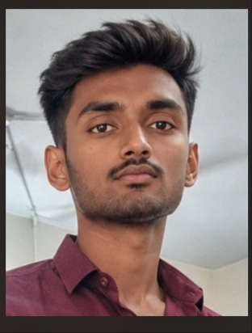

My long term goal is to become a full stact developer in which i mostly intrested in frontened development.I would like build a new web sites or web applications.I will work through my pasion and develop my skills a lot.I will increase the reputation and growth of the company.It gives bo ost to work with you.
| Education | School/College | Board/University | 8/21/26, 8:41 PM My Resume Page - J.V.Vinay Kumar Reedy (URK26CS1158) https://titusissac.github.io/25CS208/validatorv5.html 2/4Percentage of Marks | Year of Passing |
|---|---|---|---|---|
| B.Tech | College | University | 90 | 2030 |
| HSC | College | Board | 95 | 2026 |
| SSLC | School | Board | 85 | 2024 |